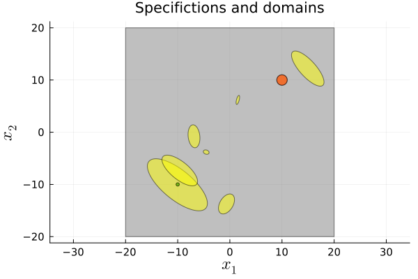
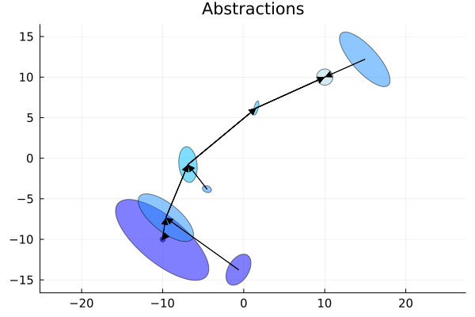
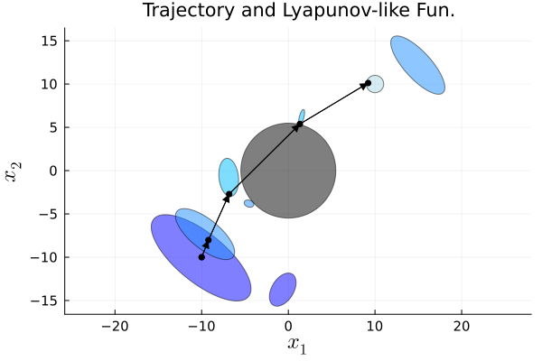

Lazy ellipsoids: building only the abstraction that synthesis needs
| System | 2-D continuous, nonlinear |
| Specification | reach |
| Solver | lazy ellipsoids abstraction (RRT + SDP) |
A lazy solver co-designs the abstraction with the controller: instead of gridding the whole state space up front, it grows ellipsoidal cells along an RRT search and solves an SDP for the local feedback in each one — computing only the fragment of the abstraction the search actually reaches (Calbert et al., 2024).
Driven through MathOptInterface directly: the ellipsoid templates and the SDP solver it needs are not expressible in the JuMP front-end.
import LazySets
using StaticArrays, Plots
using JuMP, Clarabel
import Random
Random.seed!(0)
using Dionysos
const DI = Dionysos
const UT = DI.Utils
const ST = DI.System
const PR = DI.Problem
const OP = DI.Optim
const AB = OP.Abstraction
using Symbolics
include(
joinpath(dirname(dirname(pathof(Dionysos))), "problems", "NonLinear", "non_linear.jl"),
);First example
concrete_problem = NonLinear.problem()
concrete_system = concrete_problem.system
obstacles = NonLinear.default_obstacles();Optimizer's parameters
sdp_opt = optimizer_with_attributes(Clarabel.Optimizer, MOI.Silent() => true)
maxδx = 100
maxδu = 10 * 2
λ = 0.01
k1 = 1
k2 = 1
RRTstar = false
continues = false
maxIter = 300
optimizer = MOI.instantiate(AB.LazyEllipsoidsAbstraction.Optimizer)
AB.LazyEllipsoidsAbstraction.set_optimizer!(
optimizer,
concrete_problem,
sdp_opt,
maxδx,
maxδu,
λ,
k1,
k2,
RRTstar,
continues,
maxIter;
obstacles = obstacles,
);Build the state feedback abstraction and solve the optimal control problem using RRT algorithm.
MOI.optimize!(optimizer);Path cost from EI : 1254.7364982654003Get the results
abstract_system = MOI.get(optimizer, MOI.RawOptimizerAttribute("abstract_system"))
abstract_problem = MOI.get(optimizer, MOI.RawOptimizerAttribute("abstract_problem"))
abstract_controller = MOI.get(optimizer, MOI.RawOptimizerAttribute("abstract_controller"))
concrete_controller = MOI.get(optimizer, MOI.RawOptimizerAttribute("concrete_controller"))
abstract_lyap_fun = MOI.get(optimizer, MOI.RawOptimizerAttribute("abstract_lyap_fun"))
concrete_lyap_fun = MOI.get(optimizer, MOI.RawOptimizerAttribute("concrete_lyap_fun"));Simulation
We define the cost and stopping criteria for a simulation
cost_eval(x, u) = concrete_problem.transition_cost(x, u)
reached(x) = x ∈ concrete_problem.target_set
nstep = typeof(concrete_problem.time) == PR.Infinity ? 100 : concrete_problem.time; # max num of stepsWe simulate the closed loop trajectory
x0 = LazySets.center(concrete_problem.initial_set)
traj = ST.get_closed_loop_trajectory(
concrete_system,
concrete_controller,
x0,
nstep;
stopping = reached,
f_map_override = (x, u) -> concrete_system.f_eval(x, u, [0, 0]),
)
c_traj, cost_true = ST.get_cost_trajectory(traj, cost_eval)
cost_bound = concrete_lyap_fun(x0);
println("Goal set reached")
println("Guaranteed cost:\t $(cost_bound)")
println("True cost:\t\t $(cost_true)")Goal set reached
Guaranteed cost: 1044.6922262012004
True cost: 787.5190942861083Display the results
Display the specifications and domains
fig = plot(;
aspect_ratio = :equal,
xtickfontsize = 10,
ytickfontsize = 10,
guidefontsize = 16,
titlefontsize = 14,
label = false,
);
xlabel!("\$x_1\$");
ylabel!("\$x_2\$");
title!("Specifictions and domains");
#Display the concrete domain
plot!(concrete_system.X; color = :grey, opacity = 0.5, label = false);
#Display the abstract domain
plot!(abstract_system; with_arrows = false, cost = false, label = false);
#Display the concrete specifications
plot!(concrete_problem.initial_set; color = :green, label = false);
plot!(concrete_problem.target_set; color = :red, label = false)
Display the abstraction
fig = plot(;
aspect_ratio = :equal,
xtickfontsize = 10,
ytickfontsize = 10,
guidefontsize = 16,
titlefontsize = 14,
);
title!("Abstractions");
plot!(abstract_system; with_arrows = true)
Display the Lyapunov function and the trajectory
fig = plot(;
aspect_ratio = :equal,
xtickfontsize = 10,
ytickfontsize = 10,
guidefontsize = 16,
titlefontsize = 14,
);
xlabel!("\$x_1\$");
ylabel!("\$x_2\$");
title!("Trajectory and Lyapunov-like Fun.");
for obs in obstacles
plot!(obs; color = :black)
end
plot!(abstract_system; with_arrows = false, cost = true);
plot!(traj; color = :black)
This page was generated using Literate.jl.